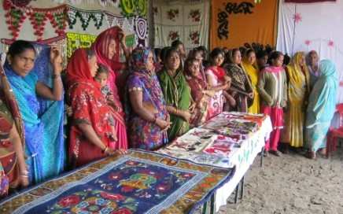
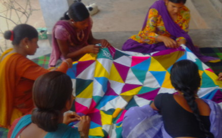
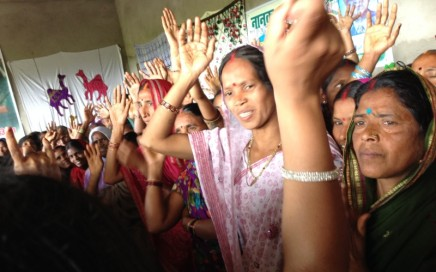

Integrated Resource Centres for the empowerment of women has been set up at Majhui, Rohtas and Kolkata, West Bengal
A very novel initiative has been taken of setting up two integrated women resource centres for women of low income groups at Calcutta and Rohtas. These centres provide vocational training, awareness on health, hygiene and nutrition, legal lieracy, couselling, collectivize women in Self Help Groups and build their capacities for income earning opportunities
3 Self Help Groups (SHG) mobilizers have been engaged with experience in similar activities in the past, and with competence to impart training in stitching, embroidery, food processing, handicrafts at the Rohtas centre. At Cacutta centre one instructor cum SHG mobilzer works with women to impart skill training in marketable handicraft products. These trainers also help women from the disadvantaged community to collectively manufacture products and facilitate their marketing through participation in fairs and exhibitions.



One of the pioneering initiatives has been the training and facilitation of one women led SHG into making hygienically produced, local nutritious food item of Sattu packed in a professional manner. Through such enterprise women are being trained to use their local skills and knowledge into income augmentation activities through which women are being economically empowered. This has also ushered in social empowerment of women since the women SHGs are also taking up various social issues in a collective manner, such as anti-alocoholism, promoting the education of girl child, raising voice against domestic violence etc. The centre provides women with basic infrastructure like sewing machines, raw materials free of cost as a start up while building in a future sustainability plan where women can compete in the market with their own reserves in the long run.
The women SHG in Kolkata are being especially trained to make decorative handmade paper boxes, stationary items and other eco friendly products.
Women from low income groups are trained in account keeping, branding, communication, pricing, customer interface etc by giving them exposure to exhibitions and fairs. One such very enriching experience for a team of 3 women and 2 men from Rohtas resource centre was organized at the Shilpotsav 2013, Noida from 25th of October to 31st of October. The organization arranged the transport to and fro from the village, their local boarding/ lodging, stall, local travel etc from its own resources.
It was a very fruitful learning experience for the women as the platform provided them a rare opportunity to get first-hand experience in entrepreneurial development.